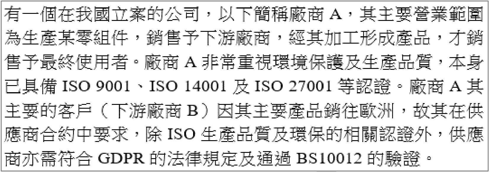
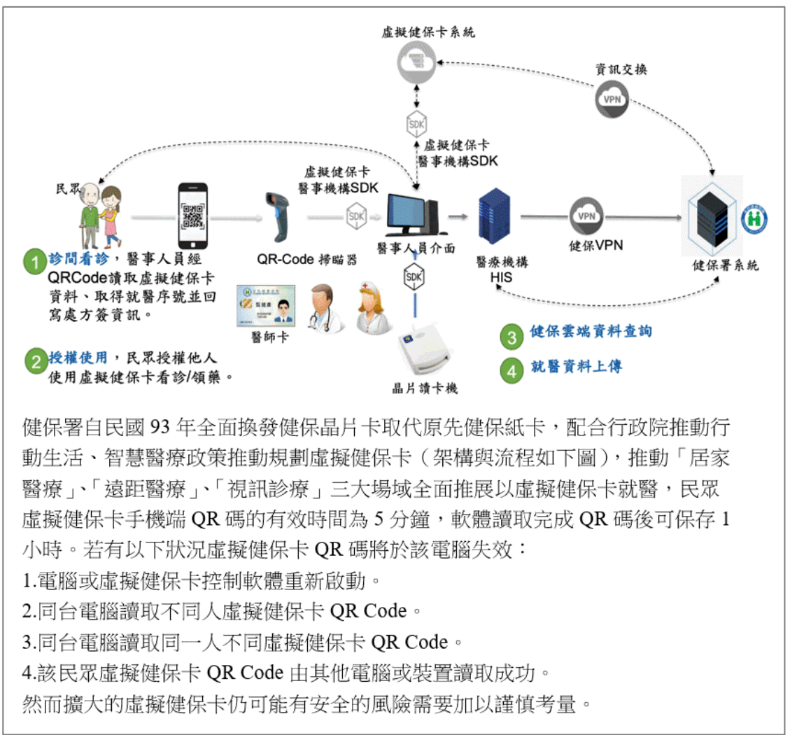
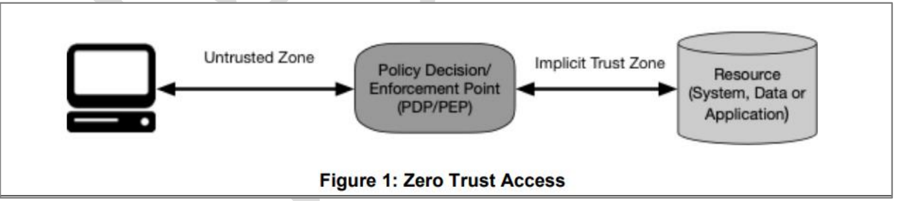
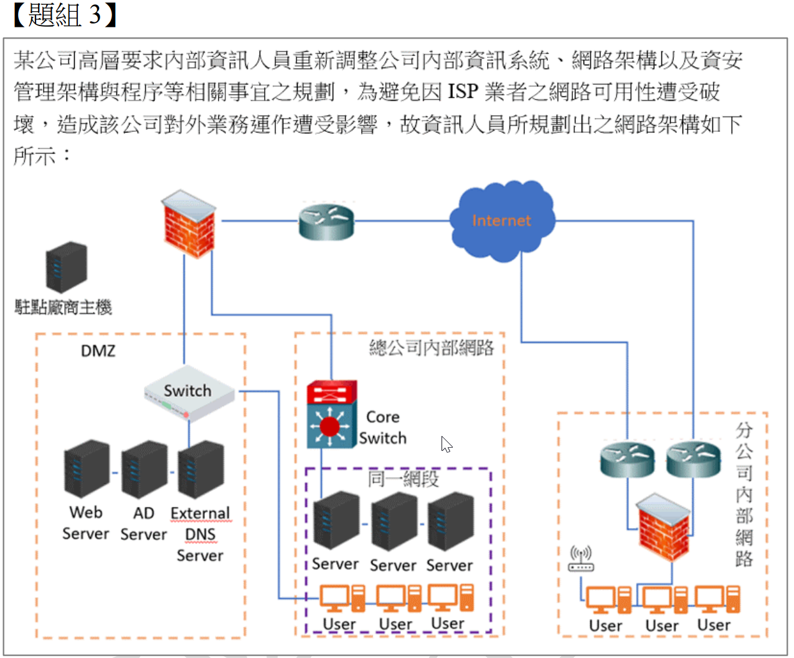
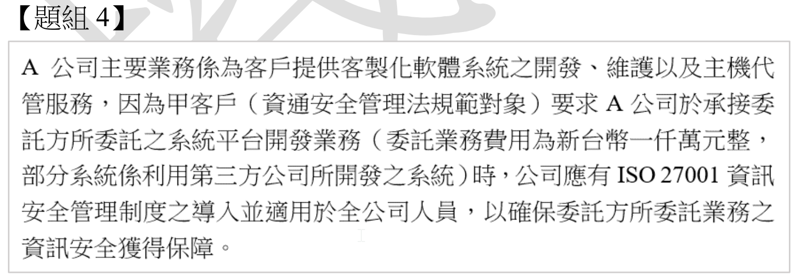
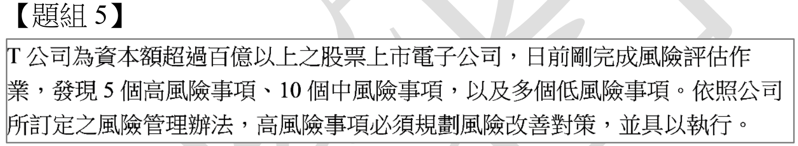
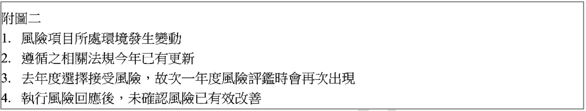

下列何項系統建置規劃並「不」是以可用性 (Availability) 作為主要之考量基準?
B
重要資料導入高可用性 (High Availability, HA) 系統
可用性 (Availability) 是指確保已授權使用者在需要時能夠存取和使用資訊及相關資產的能力。
(A) 伺服器負載平衡是將流量分散到多台伺服器，避免單點過載，提高系統的回應能力和可用性。
(B) 高可用性 (HA) 系統透過冗餘設計，確保在部分元件故障時，系統仍能持續提供服務，其主要目的就是提升可用性。
(C) 資料加密管理系統的主要目的是保護資料的機密性 (Confidentiality)，防止未經授權的存取或洩漏，與可用性較無直接關係。
(D) 即時備援機制（如熱備援、HA）旨在系統發生故障時能快速切換，減少服務中斷時間，確保可用性。
因此，建置資料加密管理系統主要考量的是機密性，而非可用性。
下列何者「不」是 ISO/IEC 27001:2013 標準中「資訊安全風險評鑑」所要求組織應進行的事項?
根據 ISO/IEC 27001:2013 的 6.1.2 條款「資訊安全風險評鑑」，組織應定義並應用一個資訊安全風險評鑑過程，該過程應：
a) 建立並維持資訊安全風險準則，包括風險接受準則。(選項 A)
b) 確保重複的資訊安全風險評鑑產生一致、有效及可比較的結果。
c) 識別資訊安全風險。(選項 B)
d) 分析資訊安全風險（例如，評估潛在後果和可能性）。
e) 評估資訊安全風險（例如，將分析結果與風險準則比較，以決定風險的優先順序）。(選項 C)
標準要求組織根據風險評估結果和風險接受準則來選擇風險處理選項（6.1.3 條款），並非要求「以最高標準處理」所有風險。風險處理應考量成本效益，將風險降低到可接受的程度即可。因此，(D) 不是標準的要求。
近年來, 民間企業數位網通服務應用加驟, 讓企業的資安單位從原本的支援角色轉變為重要的策略單位, 而資訊安全「管理」更拉高至「治理」位階, 下列哪一項可以作為企業治理資訊安全的框架及指引?
以下是各選項
ISO標準的主要內容：
- (A) ISO/IEC 27004：資訊安全管理 - 監視、衡量、分析及評估 (提供衡量ISMS有效性的指引)。
- (B) ISO/IEC 27011：資訊安全管理 - 電信組織基於ISO/IEC 27002之資訊安全控制措施指引。
- (C) ISO/IEC 27014：資訊安全治理 (Governance of information security) (提供資訊安全治理的概念、目標與流程指引)。
- (D) ISO/IEC 27017：資訊安全控制措施 - 基於ISO/IEC 27002之雲端服務指引。
題目詢問關於「
治理資訊安全」的框架及指引，
ISO/IEC 27014 正是針對此主題的國際標準。
Z 公司為台灣上市櫃公司, 主要營業項目 3C 消費性用品零售商並於實體店面及網路直接銷售給一般消費者, 公司營運據點遍及歐洲及台灣。該公司並已通過 ISO 27001 驗證, 請問下列哪些法規為該公司目前所必須遵守之法令規範? (複選)

D
歐盟一般資料保護規則 (General Data Protection Regulation, GDPR)
分析 Z 公司需遵守的法規：
- (A) 公司在台灣營運，並向消費者銷售，會蒐集處理個人資料，因此必須遵守台灣的個人資料保護法。
- (B) 公司是台灣上市櫃公司，必須遵守台灣證券交易所或櫃檯買賣中心發布的「上市上櫃公司資通安全管控指引」。
- (C) 資通安全管理法主要規範對象為公務機關及特定非公務機關（如關鍵基礎設施提供者、公營事業、政府捐助達一定比例之財團法人）。一般的上市櫃零售商除非被主管機關指定，否則通常不直接適用資通安全管理法的主體規範，但其精神與部分要求可能透過(B)指引間接影響。
- (D) 公司營運據點遍及歐洲，若其網路銷售或其他業務涉及處理歐洲居民的個人資料，則必須遵守歐盟的 GDPR。
因此，該公司必須遵守的法規包括 (A)、(B)、(D)。
【題組1】情境：有一個在我國立案的公司, 以下簡稱廠商A, 其主要營業範圍為生產某零組件, 銷售予下游廠商, 經其加工形成產品, 才銷售予最終使用者。廠商A非常重視環境保護及生產品質, 本身已具備 ISO 9001、ISO 14001 及 ISO 27001 等認證。廠商A其主要的客戶(下游廠商B)因其主要產品銷往歐洲, 故其在供應商合約中要求, 除 ISO 生產品質及環保的相關認證外, 供應商亦需符合 GDPR 的法律規定及通過 BS10012 的驗證。
請問廠商A在要符合廠商B合約要求的前提下, 下列相關認證「不」是其需優先考慮具備的項目?
廠商 B (客戶) 對廠商 A 的合約要求包括：
- ISO 生產品質相關認證 (廠商 A 已有 ISO 9001)
- ISO 環保相關認證 (廠商 A 已有 ISO 14001)
- 符合 GDPR 的法律規定
- 通過 BS 10012 的驗證 (BS 10012 是個人資訊管理系統 Personal Information Management System, PIMS 的英國標準，與 GDPR 合規密切相關)
廠商 A 自身已具備
ISO 9001、
ISO 14001 和
ISO 27001（
資訊安全管理系統）。
為滿足廠商 B 的要求，廠商 A 需要確保其
ISO 9001 和
ISO 14001 仍然有效，並需符合
GDPR 及通過
BS 10012。因此，選項 (A)、(B)、(D) 都是廠商 A 需要考慮的項目。
(C)
ISO 27017 是針對
雲端服務的
資訊安全控制措施指引。題目情境並
未提及廠商 A 提供或使用雲端服務，且客戶 B 的合約要求中也未包含此項。因此，
ISO 27017 相對不是廠商 A 需優先考慮具備的項目。
【題組1】情境如前所示, 請問廠商A已於2年前取得 ISO 27001:2013 的認證, 在保持認證資格的前提下, 請問下列措施何者「不」合適?
C
因應新版本 ISO 27001:2022 推出, 規劃相關升級 (轉版) 事宜
ISO 27001 認證的維持通常涉及一個
三年週期：
- **第一年：** 初始驗證稽核 (Initial Certification Audit)
- **第二年：** 年度監督稽核 (Surveillance Audit 1)
- **第三年：** 年度監督稽核 (Surveillance Audit 2)
- **第四年 (或第三年底)：** 重新驗證稽核 (Recertification Audit)
期間內還需要定期執行
內部稽核和
管理審查。
(A) 定期
內部稽核是
ISO 27001 的要求，用於確保
ISMS 的持續符合性與有效性。合適。
(B) 證書的有效期通常是
三年，期滿後需要通過
重新驗證稽核才能
更新證照。這個描述符合認證週期。合適。
(C) 當新版標準 (
ISO 27001:2022) 發布後，已認證組織需要在規定的轉換期限內完成
升級（轉版），以維持其認證資格。規劃轉版是必要的。合適。
(D) 廠商 A 是 2 年前取得認證，表示其三年證書週期
尚未結束。應在
明年（第三年）接受第二次監督稽核，並在
後年（第四年或第三年底）證書到期
前完成
重新驗證稽核，而不是等到明年期滿後才「重新驗證」。等到期滿後再驗證會導致認證中斷。因此，這個描述不合適。
【題組1】情境如前所示, 請問廠商A在上個月進行例行的 ISO 27001 內部稽核時, 發現員工缺乏對社交攻擊的認知, 請問下列措施何者「不」合適?
C
以模擬釣魚郵件對內部員工進行點擊測試用來評估教育訓練後的成效
D
重新評估「員工缺乏對社交攻擊的認知」可能產生的影響
內部稽核發現「員工缺乏對社交攻擊的認知」是一個風險或控制弱點。針對此發現，應採取適當的處理措施。
(A) 社交工程攻擊是常見且危害嚴重的威脅，員工缺乏認知會顯著增加組織遭受攻擊成功的可能性（如點擊釣魚郵件、洩漏敏感資訊）。將此視為「可接受的風險」通常是不合適的，因為其潛在衝擊可能很大。需要進行處理。
(B) 進行教育訓練是提高員工認知、降低此風險的直接且必要的風險緩解措施。合適。
(C) 模擬釣魚測試是評估員工警覺性及教育訓練成效的有效方法。合適。
(D) 在發現此弱點後，重新評估其可能造成的影響（風險分析），有助於判斷風險的嚴重程度及決定處理措施的優先級。合適。
因此，最不合適的措施是 (A)。
【題組1】情境如前所示, 廠商A在規畫新的客戶資料系統時, 基於資安及個資等法規、認證之要求, 請問應採取下項那些措施? (複選)
基於
個人資料保護法規（如
個資法、
GDPR、
BS 10012）的要求，處理個人資料時應遵循以下原則：
- (A) 資料最小化原則 (Data Minimisation)：應僅蒐集與處理目的直接相關且必要的個人資料，而非「儘可能蒐集所有資料」。此選項違反資料最小化原則。
- (B) 合法性、公平性及透明度原則 (Lawfulness, fairness and transparency)：蒐集處理個人資料通常需要取得當事人的同意（或具備其他法定事由），並應告知相關事項。在系統流程中納入同意確認是符合要求的。
- (C) 目的限制原則 (Purpose limitation) 與資料最小化原則：蒐集的資料應與特定、明確、合法的目的相關，且應限於達成該目的所必需的範圍。蒐集最小必要資料集合是核心要求。
- (D) 正確性原則 (Accuracy) 與當事人權利：應確保個人資料的正確性，並提供管道讓當事人可以行使其權利，包括查詢、閱覽、複製、補充或更正其個人資料。
因此，應採取的措施為 (B)、(C)、(D)。
如要實施多層次防禦 (Defense in Depth), 下列何種措施最為合適?
B
運用不同網路區段, 隔離不同用途的設備, 並分別進行相關流量過濾措施
D
於作業系統中啟用檔案存取記錄, 保留資料存取的相關記錄
多層次防禦 (Defense in Depth) 強調在不同層級（如網路邊界、內部網路、主機、應用程式、資料）部署多種不同類型的安全控制措施，以提供縱深保護。
(A) 安裝防毒軟體是單一層級（主機層）的單一措施。
(B) 運用不同網路區段（如DMZ、內部網路、特定業務網路）隔離設備（網路層分割），並針對各區段間的流量進行過濾（如防火牆、IPS），這是典型的多層次防禦在網路架構上的體現，涉及了分層和多種控制。
(C) 建立使用者帳號是基本的身份識別與存取控制措施，屬於單一類型的控制。
(D) 啟用檔案存取記錄是稽核與監控措施（偵測型控制），屬於單一類型的控制。
相較之下，(B) 最能體現多層次防禦的分層隔離與多重過濾概念。
關於身分識別與存取管理 (Identity and Access Management, IAM) 的敘述, 下列何者正確?
IAM 的核心目標是確保「對的人，在對的時間，以對的權限，存取對的資源」。它包含身份識別 (Identification)、驗證 (Authentication)、授權 (Authorization) 以及稽核 (Auditing) 等流程。
(A) 管理防火牆設定屬於網路安全管理的範疇。
(B) 控制使用者對資源的存取權限（即授權管理）是 IAM 的核心功能。
(C) 監控網路流量與入侵偵測屬於安全監控與偵測的範疇。
(D) 保護敏感資料的傳輸（如使用加密）屬於資料安全與通訊安全的範疇。
因此，最能準確描述 IAM 的是 (B)。
關於職務區隔 (Segregation of Duties, SOD) 的說明, 下列何者正確?
職務區隔 (SOD) 是一種內部控制機制，其核心目的是將一項關鍵或敏感的任務（特別是涉及資產、授權、記錄保管等的任務）分配給多個不同的人來完成，以防止任何單一個人能夠獨立地執行、隱瞞錯誤或舞弊行為。
(A) SOD 可能會增加協調的複雜性，不一定能促進合作溝通。
(B) SOD 主要關注防止舞弊和錯誤，與直接確保系統可用性關聯較小。
(C) 透過要求多人參與才能完成任務，SOD 增加了內部人員進行詐欺或誤用資源的難度，也提高了被發現的可能性，這是其主要目的。
(D) SOD 通常會增加工作流程的步驟（需要多人核准或操作），而非簡化流程。
因此，最正確的說明是 (C)。
關於權限管理的說明, 下列哪些正確? (複選)
A
一旦使用者通過身份驗證後, 系統會根據其授權層級與角色來分配相應的權限
B
可以確保每個使用者僅能存取其需要的資源或功能 (最小權限原則)
D
可以透過以角色為基礎的存取控制 (Role-based access control, RBAC) 實作
權限管理是IAM中的授權 (Authorization) 環節，旨在控制使用者能對哪些資源執行哪些操作。
(A) 描述了授權的基本流程：先驗證身份，再根據角色或屬性分配權限。正確。
(B) 最小權限原則 (Principle of Least Privilege) 是權限管理的核心指導原則，即只授予使用者完成其工作所必需的最低權限。正確。
(C) 防止越權存取（使用者嘗試存取其未被授權的資源或功能）是權限管理的主要目的之一。正確。
(D) RBAC 是實現權限管理的一種常見模型，透過將權限賦予角色，再將角色指派給使用者來簡化管理。正確。
因此，(A)、(B)、(C)、(D) 都是關於權限管理的正確說明。
*註：本題PDF標示答案為A, B, C, D 全選。*

【題組2】情境：健保署自民國93年全面換發健保晶片卡取代原先健保紙卡, 配合行政院推動行動生活、智慧醫療政策推動規劃虛擬健保卡(架構與流程如下圖), 推動「居家醫療」、「遠距醫療」、「視訊診療」三大場域全面推展以虛擬健保卡就醫, 民眾虛擬健保卡手機端QR碼的有效時間為5分鐘, 軟體讀取完成QR碼後可保存1小時。若有以下狀況虛擬健保卡QR碼將於該電腦失效: 1.電腦或虛擬健保卡控制軟體重新啟動。 2.同台電腦讀取不同人虛擬健保卡 QR Code。 3.同台電腦讀取同一人不同虛擬健保卡 QR Code。 4.該民眾虛擬健保卡 QR Code 由其他電腦或裝置讀取成功。然而擴大的虛擬健保卡仍可能有安全的風險需要加以謹慎考量。 (附圖包含：民眾手機產生QR Code -> 醫療院所掃描器掃描 -> 醫事人員卡驗證 -> 透過VPN連線健保署系統)
請問醫事人員經過讀取虛擬健保卡 QR碼, 再由醫事人員在 HIS (Hospital Information System) 系統透過虛擬健保卡系統至健保署系統查詢資料, 主要在強化下列何項程序?
整個流程涉及多個程序：
- **識別 (Identification):** 病患出示 QR 碼表明身份。
- **驗證 (Authentication):** 系統（可能結合醫事人員卡）驗證 QR 碼的有效性及與病患身份的關聯。
- **授權 (Authorization):** 驗證通過後，醫事人員被授權透過 HIS 系統去查詢健保署的特定資料。這個查詢動作本身就是一種基於已驗證身份的授權行為。
- **稽核 (Audit):** 系統應記錄此次查詢操作，供事後追查。
題目問的是「醫事人員...透過系統...至健保署系統查詢資料」這個動作主要強化了哪個程序。這個動作的關鍵在於，系統
允許 (授權) 醫事人員在完成
驗證後
執行查詢。因此，這個環節主要體現的是
授權程序，確保只有合法的醫事人員在合法的就醫情境下才能查詢資料。
【題組2】情境如前所示, 請問下列何者「不」是採用虛擬健康保卡的優點?
採用
虛擬健保卡的潛在優點：
- (A) 透過手機 QR 碼、可能的生物辨識或 PIN 碼，以及後端系統的驗證，可以為遠距醫療等場景提供更動態和數位化的身份認證機制。
- (B) 相較於實體卡可能遺失或被盜用，虛擬卡結合手機安全機制（如鎖屏、生物辨識）和後端驗證，有潛力更有效地防止未經授權的存取（如果設計得當）。
- (D) 數位化的存取過程更容易留下完整的稽核軌跡（誰、何時、何地、存取了什麼），有助於追溯責任，落實可歸責性。
- (C) 虛擬健保卡是一種替代或補充實體卡的方式，它的推行與強化實體卡本身的安全機制無直接關係。強化實體卡安全可能需要改進卡片晶片、製卡流程等。因此，這項不是採用虛擬卡的直接優點。
【題組2】情境如前所示, 請問虛擬健保卡手機端 QR 碼的內容可能包含下列何項?
QR 碼通常用於儲存少量、可快速讀取的資訊。在
虛擬健保卡的應用情境下，為了安全和效率：
- (A) QR 碼很可能包含一個一次性或有時效性的符記 (Token) 或識別碼。醫療院所掃描後，將此符記傳送到後端系統進行驗證，並用以代表此次的就醫請求或身份驗證。這是常見的安全設計模式。
- (B) 照片檔案通常較大，不適合直接儲存在 QR 碼中。照片通常儲存在後端系統，驗證成功後由系統顯示。
- (C) 直接在 QR 碼中包含帳號密碼是極不安全的做法，容易洩漏。
- (D) 生日等個人資料可能儲存在後端，不一定需要直接放在 QR 碼中，以減少個資暴露風險。核心是需要一個能連結到後端資料的識別符。
因此，最可能包含在
QR 碼中的是 (A) 存取資料的
符記 (
Token)。
【題組2】情境如前所示, 請問透過虛擬健保卡機制的建置與運用, 可能有的風險/問題有下列哪些? (複選)
引入
虛擬健保卡機制可能帶來的風險與問題：
- (A) 新增了手機 App、QR 碼、網路傳輸、後端API 等環節，這些都可能成為新的攻擊目標，因此增加了攻擊向量（或稱攻擊面）。
- (B) 如果虛擬卡和實體卡並存，需要確保兩者的狀態（如有效性、掛失）和關聯資料能夠正確且及時地同步，否則可能產生管理上的混亂或安全漏洞。
- (C) 虛擬卡的登入或使用可能涉及帳號密碼或其他憑證。如果這些憑證管理不當（如弱密碼、被釣魚），就可能被濫用。這是數位服務普遍存在的風險。
- (D) 虛擬卡的機制與實體卡（通常是晶片卡）的安全機制是獨立的。虛擬卡的引入不會直接導致實體卡的安全機制更容易被破解。實體卡的安全取決於其晶片、加密算法、金鑰管理等。
因此，可能的風險/問題包括 (A)、(B)、(C)。
*註：本題PDF標示答案為A, B。但(C)帳號密碼濫用也是數位服務常見風險，亦有可能。但相比之下，A和B是引入此新機制後更直接、特定的風險。若需嚴格選兩項，A和B較符合。*
如附圖所示 (Figure 1: Zero Trust Access), 關於 NIST SP 800-207 零信任架構 (Zero Trust Architecture) 的抽象模型敘述, 下列何項錯誤?

A
政策決策點 (Policy Decision Point, PDP) / 政策落實點 (Policy Enforcement Point, PEP) 須適當判斷主體是否可存取資源
B
零信任 (Zero Trust) 提供準則與概念, 可使 PDP/PEP 移動並貼近資源
C
PDP/PEP 已提供一系列控制, 因此通過 PEP 的流量便能取得最高層級信任
D
隱式信任區 (Implicit Trust Zone): 區域中實體至少達到最後 PDP/PEP 的信任等級
根據
NIST SP 800-207 的
零信任模型：
- (A) PDP (策略引擎) 負責根據政策和上下文資訊做出存取決策，PEP (策略執行點) 負責執行該決策，攔截存取請求並與 PDP 溝通。它們共同判斷主體是否可存取資源。正確。
- (B) 零信任的核心思想是將信任邊界縮小，將存取控制點 (PDP/PEP) 盡可能靠近需要保護的資源，而不是依賴傳統的網路邊界。正確。
- (C) 零信任的原則是「永不信任，一律驗證」。即使流量通過了 PEP，也不代表它獲得了「最高層級信任」。信任是基於單次會話、動態評估的，且應遵循最小權限原則。宣稱能取得最高層級信任是錯誤的，違背了零信任的核心理念。
- (D) 模型中的隱式信任區是指資源所在的區域。理論上，進入此區域的流量已經通過了 PEP 的檢查，因此該區域內的實體（如資源本身）至少具有通過 PEP 時所評估的信任等級（儘管零信任鼓勵進一步的內部控制）。相對於完全不可信的區域，此描述在模型概念上是合理的。
因此，錯誤的敘述是 (C)。
關於網路規劃的敘述, 下列何項較「不」安全?
A
對外服務的伺服器, 設置於防火牆的 DMZ (Demilitarized Zone) 區
B
外部分支機構須以 VPN (Virtual Private Network) 連入公司內網
D
使用入侵防護系統 (Intrusion Prevention System, IPS) 協助維護內部網路安全
安全的網路規劃通常遵循分層、隔離和最小權限原則。
(A) 將對外服務的伺服器放在 DMZ 區，可以隔離它們與內部網路，限制外部攻擊者直接接觸內部資源的風險，是標準的安全做法。
(B) 要求分支機構透過 VPN 連線，可以提供加密通道和身份驗證，保護連線安全。
(C) 將所有使用者和伺服器放在同一網段（即「扁平網路」Flat Network）是非常不安全的做法。這意味著缺乏網路隔離，一旦任何一台使用者電腦被入侵，攻擊者可以輕易地橫向移動攻擊同一網段內的所有伺服器和其他使用者。
(D) IPS 可以偵測並阻止已知的攻擊流量，是加強內部網路安全（尤其是防止威脅擴散）的有效工具。
因此，最不安全的做法是 (C)。
關於系統災害復原規劃的敘述, 下列何項錯誤?
A
恢復點目標 (Recovery Point Objective, RPO) 的設定應考量資料備份頻率
B
最大可中斷時間 (Maximum Tolerable Downtime, MTD) 的設定, 應符合組織所訂定之可用性的資安目標
C
恢復時間目標 (Recovery Time Objective, RTO) 之設定與最大可中斷時間 (MTD) 無關
D
營運衝擊分析 (Business Impact Analysis, BIA) 可協助評估各個系統的重要性
災害復原規劃中的關鍵指標：
- RPO (恢復點目標)：指災難發生後，系統恢復時可容忍丟失多少時間的資料量。這直接關係到資料備份的頻率。例如，RPO 為 1 小時，意味著至少每小時要備份一次。 (A) 正確。
- MTD (最大可中斷時間)：指業務流程能夠承受的最長中斷時間，超過此時間將導致無法接受的業務後果。這是由業務需求和可用性目標決定的。(B) 正確。
- RTO (恢復時間目標)：指災難發生後，系統必須恢復運作所需的時間。為了確保業務連續性，RTO 必須小於或等於 MTD (RTO ≤ MTD)。因此，RTO 的設定與 MTD 密切相關。宣稱兩者無關是錯誤的。(C) 錯誤。
- BIA (營運衝擊分析)：用於識別關鍵業務流程及其依賴的資源（包括 IT 系統），評估中斷對業務造成的衝擊，並確定各流程的 RTO 和 RPO 需求，從而評估系統的重要性。(D) 正確。
端點偵測與回應 (Endpoint Detection and Response, EDR) 係指可偵測並調查主機以及端點上的一些可疑活動, 並透過自動化方式通知資安團隊進行快速回應的資安措施, 關於 EDR 所提供的主要功能的敘述, 下列哪些正確? (複選)
A
主動監控端點, 並針對具有威脅跡象的活動收集資料
B
對蒐集的主機弱點執行分析, 以識別是否有任何未知的威脅模式
C
針對所有已識別威脅產生自動回應, 以移除或遏止威脅
D
利用分析和鑑識工具, 針對可能導致其他可疑活動的已識別威脅執行研究
EDR 解決方案的核心功能通常包括：
- (A) 持續監控和收集端點活動數據（如進程執行、網路連接、文件修改、登錄檔變更等），特別是尋找已知的或可疑的威脅指標 (Indicators of Compromise, IoC) 或攻擊指標 (Indicators of Attack, IoA)。正確。
- (B) EDR 主要關注的是活動監控和威脅偵測/回應，而非主動執行弱點分析。弱點管理通常由專門的弱點掃描或管理工具負責。錯誤。
- (C) 提供自動化的回應能力，例如隔離受感染的主機、終止惡意進程、刪除惡意文件等，以快速遏制威脅。正確。
- (D) 提供調查、分析和鑑識工具，幫助資安團隊深入研究警報，追蹤攻擊鏈，理解威脅的來龍去脈，並進行威脅獵捕 (Threat Hunting)。正確。
因此，正確的功能敘述是 (A)、(C)、(D)。
*註：本題PDF標示答案為A, C, D。*

【題組3】情境：某公司高層要求內部資訊人員重新調整公司內部資訊系統、網路架構以及資安管理架構與程序等相關事宜之規劃, 為避免因ISP業者之網路可用性遭受破壞, 造成該公司對外業務運作遭受影響, 故資訊人員所規劃出之網路架構如下圖所示: (附圖包含 Internet -> DMZ (Web, AD, External DNS) -> Core Switch -> 總公司內部網路 (Server, User) 及 分公司內部網路 (User))
請問避免因 ISP 業者之網路可用性遭受破壞, 造成該公司對外業務運作遭受影響, 下列改善方式何者正確?
A
總公司網路架構已區分為內部網路與 DMZ 區, 甚為妥適亦無任何改善空間
問題的核心是避免因單一 ISP 業者的網路中斷而影響對外業務。這是一個可用性問題，特別是針對外部網路連線。
(A) 網路架構區分內部與 DMZ 是基本的安全設計，但無法解決 ISP 線路中斷的問題。且聲稱「無任何改善空間」通常是不對的。
(B) 增購備援路由器可以提高內部路由的可用性，但如果連接到的是同一個 ISP，當 ISP 中斷時，備援路由器也無法連外。
(C) 增購另一家不同 ISP 業者的網路線路作為備援，是解決單一 ISP 故障問題的標準方案。當主要 ISP 中斷時，可以切換到備援 ISP，確保對外連線的可用性。
(D) 增購備援交換器可以提高內部網路交換層的可用性，但與解決 ISP 中斷問題無關。
因此，最正確的改善方式是 (C)。
【題組3】情境如前所示, 請問若要避免遭受勒索軟體病毒大規模攻擊的事件發生在公司內部網路的資訊設備上, 下列何項控制措施錯誤?
D
實施內部網路之網路區隔, 例如依據內部組織別或功能別切分 VLAN
防止
勒索軟體在內部網路大規模擴散的措施：
- (B) 在端點安裝防毒軟體或EDR，可以偵測和攔截已知的勒索軟體。
- (C) 定期更新病毒碼是確保防毒軟體能夠識別最新威脅的必要步驟。
- (D) 實施網路區隔（如使用 VLAN）可以限制勒索軟體在內部網路中的橫向移動範圍，避免一次感染就擴散到所有設備。
- (A) L3 交換器（第三層交換器）具備路由功能，可以實現 VLAN 間的路由。雖然網路區隔 (D) 可能需要 L3 交換器來實現，但僅僅「增購 L3 交換器」本身並不能直接防止勒索軟體攻擊。重點在於如何利用它來做網路區隔和設定存取控制。如果只是替換現有交換器而未做任何安全配置，則沒有實質幫助。相比之下，B, C, D 都是明確的防護措施。因此，(A) 作為單獨措施是效果最不明確或相對錯誤的。
【題組3】情境如前所示, 公司因某業務委外作業, 必須允許委外駐點人員可以攜帶資訊設備至總公司內部進行作業。請問資訊人員對於此委外廠商主機攜入總公司內部之風險控管, 下列敘述何者較為「不妥」?
C
要求該委外廠商主機應安裝防毒軟體並更新病毒碼至最新
控管委外廠商攜入設備的風險，應限制其存取範圍並確保設備本身的基本安全。
(A) 要求廠商在 DMZ 區作業，可以將其與更敏感的內部網路隔離，是一種常見的控制措施。
(C) 要求安裝最新的防毒軟體，可以降低惡意軟體引入的風險。
(D) 要求系統更新至最新狀態，可以減少已知漏洞被利用的風險。
(B) 要求廠商「僅能於分公司內部網路作業」是不合理的。委外人員是到「總公司」進行作業，要求他們去分公司作業邏輯不通。即使是要求他們在總公司內部網路的「某個特定區域」作業，也需要評估該區域的敏感度和必要的存取權限，不一定比 DMZ 更安全。因此，此選項最不妥當。
【題組3】情境如前所示, 有關存取控制面向之風險, 下列敘述哪些正確? (複選)
A
AD (Active Directory) Server 配置於 DMZ 區, 容易導致公司重要網域資訊遭受來自外部之攻擊
B
分公司內部網路 User 電腦連接未納管的無線AP 使用, 容易導致外部未經授權存取內部網路資源之風險
C
總公司內部網路 User 電腦連接 DMZ 區 Switch 使用, 可能遭受來自於 DMZ 區未經授權存取內部網路資源之風險
D
總公司內部網路之 Server 以及 User 端並未進行網路切割, 容易導致因 User 端所產生之風險直接影響 Server 端
分析圖中架構的存取控制風險：
- (A) AD Server 包含組織內所有使用者帳號、密碼雜湊、群組原則等核心身份驗證與授權資訊，是攻擊者的高價值目標。將其放置在暴露於外部風險的 DMZ 區是極不安全的設計，容易遭受攻擊。正確。
- (B) 使用未納管、不安全的無線 AP 會建立一個不受控的網路入口，外部攻擊者可能透過此 AP 繞過邊界防護，直接存取內部網路資源。正確。
- (C) 根據圖示，總公司內部 User 是連接到 Core Switch，而非 DMZ 區的 Switch。DMZ 的目的是隔離對外服務，內部 User 不應直接連接到 DMZ 交換器。如果 User 連接到 DMZ 交換器，風險是 User 可能被 DMZ 的威脅感染，而不是 DMZ 未經授權存取內部。敘述本身邏輯和圖示可能不符。
- (D) 圖中總公司內部的 Server 和 User 雖然連接到同一個 Core Switch，但文字描述為「同一網段」，並未明確顯示是否有進行 VLAN 切割或其他形式的網路區隔。如果未進行切割（扁平網路），則 User 端產生的風險（如病毒感染）確實很容易橫向擴散影響到同一網段的 Server。這是缺乏內部網路區隔的典型風險。正確。
因此，正確的風險敘述是 (A)、(B)、(D)。
*註：本題PDF標示答案為A, B, C, D 全選。但(C)的描述"User電腦連接 DMZ 區 Switch" 與常規理解和圖示可能不符，且風險描述的方向也有疑問。若嚴謹判斷，C存疑。但若假設User真的能連DMZ Switch，則DMZ的風險確實可能影響該User，再進而影響內部。*
與資訊安全風險評估相關議題的敘述, 下列何者較為正確?
A
需先進行風險評估, 再將風險評鑑適用的準則予以建立
B
風險評估會依照風險分析的結果, 安排其風險處理的優先順序
C
風險評鑑的順序, 是先執行風險識別、再進行風險評估、風險分析
資訊安全風險評估的流程與概念：
- (A) 風險評鑑的準則（包括風險接受準則）應在進行風險評估之前建立，作為後續評估風險等級和決定是否需要處理的依據。順序錯誤。
- (B) 風險評估 (Risk Evaluation) 是將風險分析 (Risk Analysis) 的結果（如風險等級）與風險準則進行比較，以確定風險的優先順序，決定哪些風險需要優先處理。正確。
- (C) 風險評鑑 (Risk Assessment) 的過程通常包含：風險識別 (Risk Identification) -> 風險分析 (Risk Analysis) -> 風險評估 (Risk Evaluation)。選項中的順序將評估放在分析之前，錯誤。
- (D) 識別風險擁有者 (Risk Owner) 是風險管理過程中的重要環節，通常在風險識別階段或稍後進行。風險擁有者負責後續的風險處理決策與執行。聲稱無需識別是錯誤的。
因此，較為正確的敘述是 (B)。
下列何者「不」屬風險管理架構的參考指引?
A
NIST Cybersecurity Framework (CSF)
以下是各選項所代表的標準或框架：
- (A) NIST CSF：美國國家標準暨技術研究院的網路安全框架，提供改善關鍵基礎設施網路安全風險管理的指引，廣泛被各行業用作風險管理參考。
- (B) ISO/IEC 27035：資訊安全事件管理 (Information security incident management) 標準，提供事件偵測、報告、評估、回應和從中學習的指引。它不直接是風險管理的整體架構，而是應對風險實現後（即事件發生後）的管理流程。
- (C) ISO/IEC 31000：風險管理 — 指引 (Risk management — Guidelines)，提供通用的風險管理原則與框架，適用於任何類型和規模的組織及各種風險。
- (D) NIST SP 800-37：風險管理框架 (Risk Management Framework, RMF)，為美國聯邦資訊系統提供風險管理方法，包含分類、選擇、實施、評估、授權和監控安全控制等步驟。
因此，
ISO/IEC 27035 主要關注
事件管理，而非
風險管理的整體架構。
關於資訊資產價值計算之因子, 下列敘述何者錯誤?
資訊資產的價值評估通常不僅僅是其購置成本，更重要的是它對組織業務的重要性，這通常透過資訊安全的機密性、完整性和可用性 (CIA) 來衡量。
(A) 機密性要求：如果資產（如客戶資料）洩漏會造成重大損害，則其價值較高。
(B) 完整性要求：如果資產（如交易紀錄）被竄改會造成重大影響，則其價值較高。
(C) 可用性要求：如果資產（如生產系統）無法使用會導致業務停頓，則其價值較高。
(D) 購買金額（購置成本）只是資產成本的一部分，不能完全代表其對組織的實際價值。例如，一份包含重要商業機密的檔案可能沒有直接的購買成本，但其機密性價值極高；反之，一台昂貴但非核心的伺服器，其可用性價值可能不如想像中高。因此，將購買金額作為價值計算的主要或必要因子是不全面的，相較於 CIA 的重要性，此敘述被認為是錯誤的。資產價值應從業務衝擊角度評估。
依照我國《行政院及所屬各機關風險管理及危機處理作業原則》之規定, 下列哪些作業事項屬於風險辦識 (Identification) 及評估 (Evaluation) 階段? (複選)
根據該作業原則，
風險管理流程通常包含風險的
辨識、
分析、
評估、
處理、
監控與審查等階段。
風險辨識及評估階段主要工作包括：
- 設定目標與範圍。
- 蒐集與發掘風險資料，識別潛在的風險事件。(選項 B)
- 分析風險發生的可能性與衝擊。(選項 C)
- 評估風險等級，建立風險圖像（例如風險矩陣或清單，呈現風險的優先順序）。(選項 A)
(D) 布建
控制措施屬於
風險處理 (
Risk Treatment) 階段的工作，是在
辨識與評估完成後，針對需要處理的風險所採取的行動。
因此，屬於
辨識與評估階段的作業事項是 (A)、(B)、(C)。
*註：本題PDF標示答案為A, B, C。*

【題組4】情境：A 公司主要業務係為客戶提供客製化軟體系統之開發、維護以及主機代管服務, 因為甲客戶(資通安全管理法規範對象)要求A公司於承接委託方所委託之系統平台開發業務(委託業務費用為新台幣一仟萬元整, 部分系統係利用第三方公司所開發之系統)時, 公司應有ISO27001 資訊安全管理制度之導入並適用於全公司人員, 以確保委託方所委託業務之資訊安全獲得保障。
A 公司為滿足甲客戶要求, 正評估導入 ISO 27001 資訊安全管理制度之範圍。試問 A 公司針對導入範圍評估過程與結果之敘述, 下列哪些正確? (複選)
B
將A 公司高層對於組織內部資訊安全的需求與期望納入利害關係方議題調查過程
C
將 A 公司軟體系統之開發、維護之業務活動納入 ISO 27001 資訊安全管理制度之導入範圍
D
將 A 公司主機代管服務之業務活動排除納入 ISO 27001 資訊安全管理制度之導入範圍
ISO 27001 標準 4.1-4.3 條款要求組織在決定
ISMS 範圍時，需考量：
- 組織背景 (Context of the organization)。
- 利害關係方 (Interested parties) 的需求與期望。
- 組織活動與介面。
(A) 甲客戶是提出要求的
主要利害關係方，其需求與期望（要求導入
ISO 27001）必須納入考量。正確。
(B) 公司高層也是
重要的內部利害關係方，他們對
資訊安全的期望與目標（如保護公司資產、符合法規、滿足客戶要求）同樣需要納入。正確。
(C) 軟體系統的開發與維護是 A 公司的
核心業務，也是甲客戶委託的範圍，理應納入
ISMS 的導入範圍。正確。
(D)
主機代管服務也是 A 公司的
主要業務之一，雖然甲客戶的委託內容主要是開發，但客戶要求
ISMS「適用於全公司人員」。若要全面導入，
主機代管業務不應輕易排除，除非有明確理由且不影響整體目標。將其排除可能
不符合客戶的期望或
ISMS 的完整性。不正確。
因此，正確的敘述是 (A)、(B)、(C)。
*註：本題PDF標示答案為A, B, C。*
【題組4】情境如前所示, A 公司為了執行軟體系統之開發、維護業務活動內有關資訊資產的風險管理事項, 因此實施了一系列的有關作為。試問有關作為之敘述, 下列何者錯誤?
A
針對軟體系統之開發、維護業務活動內包含人員、軟體、硬體、服務與資訊類的資訊資產實施盤點, 並計算其資產價值
B
針對每一資訊資產識別出該資產的弱點與面臨之威脅, 並考量風險發生後對組織造成之衝擊以計算該資訊資產之風險值
C
對於不可接受之風險採取相應之控制措施進行處理, 以降低其風險至可接受程度
D
依據所採取之控制措施結果, 於適用性聲明 (Statement of Applicability, SoA) 排除資訊系統獲取、開發及維護之適用
風險管理過程包括：
- (A) 資產盤點與價值評估：識別範圍內的資產（人員、軟硬體、服務、資訊），並評估其價值（通常基於CIA）。這是風險評鑑的基礎。正確。
- (B) 風險識別與分析：識別資產的弱點、面臨的威脅，並分析風險發生的可能性與衝擊，以計算風險值。正確。
- (C) 風險處理：對於評估後超過可接受水準的風險，選擇並實施控制措施（如風險緩解、轉移、避免）以降低風險。正確。
- (D) 適用性聲明 (SoA) 是 ISO 27001 的必要文件，它列出組織選用了哪些Annex A 的控制措施，以及不選用某些措施的理由。A 公司的核心業務是軟體開發與維護，Annex A 中有許多與「資訊系統獲取、開發及維護」相關的控制措施（如 A.14）。基於已採取的控制措施，不代表可以將整個相關領域從 SoA 中排除適用。排除適用必須有充分且合理的理由（例如該活動完全不存在於範圍內），而非因為已採取某些措施就排除整個領域。這顯然是錯誤的。
【題組4】情境如前所示, 為了滿足資通安全管理法有關公務機關或特定非公務機關, 於資通安全管理法適用範圍內, 委外辦理資通系統之建置、維運或資通服務之提供, 應考量受託者之專業能力與經驗、委外項目之性質及資通安全需求, 選任適當之受託者, 並監督其資通安全維護情形之要求, 因此 A 公司與甲客戶均實施了一系列有委外選任與監督責任之要求作為。試問有關 A 公司與甲客戶所實施之作為, 下列何者較「不」適當?
A
A 公司實施包含受託業務相關活動在內之有關資訊資產進行風險評鑑
B
甲客戶定期以稽核方式確認 A 公司對於受託業務之執行情形
C
甲客戶委託 A 公司對該委託業務之資通系統實施安全性檢測
D
A 公司標示非自行開發之內容與其來源及提供授權證明
委外管理的適當作為：
- (A) A 公司（受託方）對其負責的業務活動（包括受託業務）進行風險評鑑，是其內部資安管理的必要工作。適當。
- (B) 甲客戶（委託方）有責任監督受託方的執行情形，定期稽核是一種有效的監督方式。適當。
- (C) 安全性檢測（如滲透測試、源碼掃描）應由獨立於開發單位的一方執行，以確保客觀性。委託開發商 A 公司自行對其開發的系統進行安全性檢測，存在利益衝突，檢測結果的可信度會受到質疑。通常應由甲客戶自行執行或委託獨立的第三方進行檢測。不適當。
- (D) A 公司在開發過程中若使用第三方元件（如情境所述），應揭露其來源並確保授權合法，這是軟體供應鏈透明度與合規性的要求。適當。
因此，較不適當的作為是 (C)。
【題組4】情境如前所示, 近期 A 公司為了確保能如期如質的完成受託業務, 增設系統開發人員的職缺並導入系統開發的安全控制措施。試問有關 A 公司所實施之作為, 下列何者較「不」適宜?
A
針對 A 公司軟體系統之開發、維護業務活動實施風險評鑑
D
導入安全軟體發展生命週期 (Secure Software Development Life Cycle, SSDLC)
為確保系統開發安全，應採取的措施：
- (A) 對開發維護活動進行風險評鑑，找出潛在風險，是安全開發的基礎。適宜。
- (B) 對新進開發人員進行安全意識和安全編碼的教育訓練，是降低人為疏失風險的重要措施。適宜。
- (C) 採用未經驗證的第三方套件（如開源函式庫）會引入未知的安全風險（如漏洞、惡意程式碼）。應選擇經過評估、來源可信、有維護的套件，並進行安全性檢測。採用未驗證套件是不適宜的。
- (D) 導入 SSDLC，將安全活動（如需求分析、威脅建模、安全測試）整合到軟體開發的各個階段，是系統性提升軟體安全性的最佳實務。適宜。
因此，較不適宜的作為是 (C)。
關於風險處理的敘述, 下列何者正確?
A
風險可接受準則需先定義清楚, 風險評鑑結果超過此準則就必須進行風險處理, 以降低風險
B
風險處理須實施的控制措施, 皆必須參考 ISO 27001 的附錄A
C
風險處理計畫及殘餘風險的結果, 須由資產擁有者確認
風險處理的原則與流程：
- (A) 組織必須先定義風險可接受準則。在風險評鑑後，將風險分析結果與此準則比較，若風險等級超過可接受水準，則必須進行風險處理。這是標準的風險管理流程。正確。
- (B) ISO 27001 的附錄A 提供了一套通用的控制措施參考清單，組織應參考它來選擇控制措施，但並非強制所有措施都必須來自附錄A，組織也可以依據自身需求選擇或設計其他更合適的控制措施。聲稱「皆必須參考」過於絕對。錯誤。
- (C) 風險處理計畫和殘餘風險的接受，應由風險擁有者 (Risk Owner) 負責核准與確認，而非資產擁有者（雖然兩者可能是同一人，但角色職責不同）。錯誤。
- (D) 風險處理的目標是將風險降低到可接受的程度，而非完全消除風險（風險為零）。多數情況下，處理後仍會存在一定程度的殘餘風險。錯誤。
因此，正確的敘述是 (A)。
關於必須進行風險評估的狀況, 下列敘述何者錯誤?
A
依據 ISMS (Information Security Management System) 要求, 必須定期施行風險評估
B
決定到美國設立新的工廠, 將公司研發團隊遷往美國
D
將本地端所有資訊系統密遷到 Azure 雲端服務
風險評估應在特定時機觸發：
- (A) ISMS 標準（如 ISO 27001）要求定期（例如每年）或在發生重大變更時進行風險評估。正確。
- (B) 在國外設立新工廠並遷移研發團隊，涉及重大的地理位置、法規環境、基礎設施、人員和業務流程變更，必然引入新的風險，必須進行風險評估。正確。
- (C) 一般員工的個人國外旅遊通常不直接構成組織層面的重大變更，不太可能觸發全面的組織風險評估。除非該旅遊涉及攜帶公司敏感設備或資料，且缺乏相應的差旅安全政策，才可能需要針對性評估。但作為一般情況，此項最不可能要求進行整體風險評估。錯誤。
- (D) 將所有系統從本地遷移到雲端，涉及基礎設施、架構、安全責任模型、資料儲存位置、網路連線等根本性改變，會帶來一系列新的雲端安全風險，必須進行詳細的風險評估。正確。
因此，錯誤的敘述（即最不可能需要進行風險評估的狀況）是 (C)。
某作業流程經過風險評估 (Assessment) 後的固有風險值, 遠低於所設定的可接受風險水準時, 下一步行動方案, 下列何者較「不」適當?
當評估出的固有風險（或經過初步控制後的風險）已經遠低於可接受水準時，通常表示該風險在當前情況下是被組織所接受的。
(A) 即使風險低，仍應確認並記錄其剩餘風險水準。適當。
(B) 將風險評估結果（包括低風險項目的狀況）向管理階層報告，是風險管理溝通的一部分。適當。
(C) 風險既然已經遠低於可接受水準，通常不需要再投入額外資源實施新的控制措施去進一步降低它，除非有特殊考量（如零容忍風險）。這樣做可能不符合成本效益原則。將資源投入到處理更高中風險的項目上通常更合理。因此，再實施控制措施較不適當。
(D) 風險狀況是動態變化的，即使目前風險低，仍需持續監控相關流程或環境的變化，以確保風險水準沒有因為新的因素而升高。適當。
因此，較不適當的行動方案是 (C)。
X 公司與 Y 公司進行網路服務業務合作之風險超過公司所設定之風險胃納 (Risk appetite)。X 公司最後決定與 Y 公司進行合作, 下列哪些項目是合適的風險回應選擇? (複選)
已知合作風險超過風險胃納，但 X 公司仍然決定要合作。這意味著：
(A) 風險規避：指決定不進行該項合作，以完全避免相關風險。既然已經決定合作，此選項不適用。
(B) 風險保留（或接受）：指接受目前的風險水準，不採取額外措施。但題目已知風險超過風險胃納（即可接受水準），因此單純保留風險是不合適的，除非經過特殊考量與高層批准。
(C) 風險緩解：既然決定合作，X 公司必須採取措施（如加強合約中的安全條款、增加監控、實施額外安全控制）來降低合作帶來的風險，使其降至可接受範圍。這是必要的回應。
(D) 風險分擔（或轉移）：X 公司可以透過合約條款（如責任限制、賠償）、購買保險或與 Y 公司共同承擔某些控制成本等方式，將部分風險轉移或分擔出去。這也是可能的回應方式。
因此，在決定合作的前提下，合適的風險回應選擇是 (C) 和 (D)。
*註：本題PDF標示答案為C, D。*

【題組5】情境：T公司為資本額超過百億以上之股票上市電子公司, 日前剛完成風險評估作業, 發現5個高風險事項、10個中風險事項, 以及多個低風險事項。依照公司所訂定之風險管理辦法, 高風險事項必須規劃風險改善對策, 並具以執行。
T 公司未聘雇資安長亦無專責資安管理單位, 初步評估為中風險事項。後來經過內部討論時, 公司治理主管要求將其調整為高風險事項, 請問此項調整「最」可能的原因為何?
A
資訊安全為各界重視項目, 各項資安措施皆應以最高標準要求
B
公司人員編制設有資安長之職位, 但尚未招聘專業主管
T 公司是資本額超過百億的上市公司。根據台灣金融監督管理委員會（金管會）發布的規定以及「上市上櫃公司資通安全管控指引」，對特定規模（如資本額達一定標準，或屬於特定產業）的上市櫃公司，有強制要求設立資訊安全長 (CISO) 及專責資安單位/人員。
(A) 雖然資安受重視，但風險評級應基於客觀評估，而非一律要求最高標準。
(B) 即使編制有此職位但未招聘，根本原因仍可能是法規要求設立。
(C) T 公司的規模很可能已達到法規強制要求設立資安長及專責單位的門檻。公司治理主管將此項調整為高風險，最可能的原因是意識到不符合法令法規會帶來合規性風險、處罰風險以及聲譽風險，這些風險等級通常較高。
(D) 去年的評估結果不能解釋為何「今年」需要將其從中風險「調高」為高風險。
因此，最可能的原因是法令法規的要求。
【題組5】情境如前所示, 風險評鑑發現的 5 個高風險事項, 皆與公司目前最主要之業務或主要作業流程相關, 請問下列何項風險回應是公司最「不」可能選擇執行的項目?
C
尋求合格之外部合作廠商, 將風險降低至可接受水準
針對與主要業務或主要作業流程相關的高風險事項，組織通常會優先考慮如何控制風險以維持業務運作。
(A) 增加控制作業（風險緩解）是處理高風險最常見的方式。
(B) 購買保險（風險轉移）可以轉移部分財務損失風險，也是可能的選項，特別是對於難以完全緩解的風險。
(C) 尋求外部合作廠商協助（可能涉及風險緩解或風險分擔/轉移，如委外處理高風險環節），也是降低風險的可行方式。
(D) 結束主要業務（風險規避）雖然能完全避免相關風險，但對於攸關公司核心營運的項目來說，這是最後的手段，通常最不可能被選擇，因為這意味著放棄主要的收入來源或核心能力。
因此，最不可能選擇執行的項目是 (D)。
【題組5】情境如前所示, 公司風險評鑑後發現, 其中一個高風險事項去年度亦列為高風險事項。請問發生此現象最可能的原因 (請見附圖二) 為下列何項?
附圖二:
1. 風險項目所處環境發生變動
2. 遵循之相關法規今年已有更新
3. 去年度選擇接受風險, 故次一年度風險評鑑時會再次出現
4. 執行風險回應後, 未確認風險已有效改善

一個高風險事項連續兩年都被評為高風險，可能的原因分析：
- 1. 環境變動：如果風險所處的內外部環境（如威脅情勢、業務流程、技術架構）發生了使其惡化的變動，即使去年處理過，今年風險可能再次升高或維持在高位。可能。
- 2. 法規更新：如果相關法規更新，提高了合規要求或罰則，原本已處理到邊緣可接受的風險，可能會因為新標準而再次變為高風險。可能。
- 3. 去年接受風險：如果去年評估後決定接受該高風險（例如處理成本過高或暫無良策），那麼在今年的評估中，若情況未變，它自然會再次出現為高風險。可能。
- 4. 風險回應無效或未確認有效：如果去年執行了風險回應措施，但這些措施效果不彰，或者沒有進行後續追蹤確認其有效性，導致風險並未真正降低，那麼今年評估時它仍然會是高風險。可能。
然而，題目問的是「最可能」的原因，且給出了選項組合。仔細看選項，選項 C (124) 和 B (234) 都包含多個可能原因。但選項 C 中排除了 3（去年接受風險）。如果去年「選擇接受風險」，今年再次出現是預期中的，不算是「現象發生」的意外原因，而是策略選擇的結果。而 1, 2, 4 都是導致風險「未能有效降低」或「再次升高」的常見原因。
*Self-Correction: 重新思考題目語意，"發生此現象最可能的原因"。如果去年是"接受風險"，今年再次出現就不算異常"現象"，而是已知狀況。所以原因3可能不是解釋"為何風險仍然高"的最佳答案，而是解釋"為何它再次出現"。而原因1, 2, 4是解釋"為何風險值本身維持在高位或未下降"。*
因此，組合 1, 2, 4 (選項C) 涵蓋了環境變化、法規變化以及處理措施失敗這三個導致風險持續偏高的主要因素，是較佳的解釋。
*註：本題PDF標示答案為C (124)。*
【題組5】情境如前所示, 公司高層評估未來業務模式後, 已決定將主要營運系統架設置雲端以利各地公司協同作業, 並已編列預算執行此項。此次風險評估亦將公司內部缺乏建置雲端系統之軟硬體列為高風險事項。請問下列哪些內容是公司可能的風險回應? (複選)
A
尋找符合公司要求之雲端服務廠商 (CSP), 共同合作完成公司要求
B
尋找專業 SI (System Integrator) 廠商, 由其協助規劃系統轉移至雲端提供服務
C
增聘相關專業人員、購買相關軟體及硬體設施, 並規劃增設合格機房, 自行完成公司要求
D
由於初步估計所需經費約超過已編列預算 5%, 因此將要求公司停止此項變更
面對「缺乏內部建置雲端系統能力」的高風險，同時又有「將系統架設至雲端」的決策，可能的風險回應（處理）方式包括：
- (A) 風險分擔/轉移/緩解：與雲端服務廠商合作，利用其專業能力和基礎設施來達成目標，同時將部分建置和維運的風險轉移給 CSP。
- (B) 風險緩解/分擔：尋求專業 SI 廠商協助，利用其經驗和技術來規劃和執行雲端遷移，降低自行摸索的風險。
- (C) 風險緩解/接受：自行投入資源（增聘人員、購買設備、建置機房）來建立內部能力。這是試圖直接緩解「能力缺乏」的風險，但同時也接受了自行建置維運所需承擔的全部風險和成本。雖然成本高、風險大，但也是一種可能的策略選擇（尤其對有特殊需求的組織）。
- (D) 風險規避：因為預算超支而停止雲端遷移計畫。這是在處理預算風險，但同時也規避了雲端遷移本身帶來的風險（以及效益）。然而，公司高層已決定要上雲端，僅因 5% 的預算超支就完全停止的可能性相對較低，通常會尋求其他方案（如調整範圍、追加預算、優化成本）。但作為一個理論上的回應選項，規避（停止計畫）是存在的。
題目問的是「可能的」風險回應。A, B, C 都是針對「缺乏能力」風險的常見處理方式（外包、尋求專家協助、自行建立能力）。因此 A, B, C 都是可能的風險回應。
*註：本題PDF標示答案為A, B, C。*